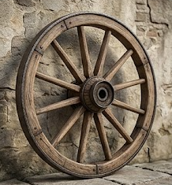
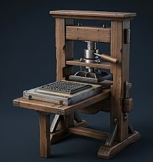

Evolucija civilizacije: Detaljan pregled tehnoloških epoha
1. Praistorija i antika: Revolucija točka

Izum točka, koji se pripisuje drevnoj Mesopotamiji oko 3500. godine prije nove ere, nije bio samo mehanički napredak, već katalizator za prvu globalnu ekonomsku tranziciju. Prije točka, ljudska civilizacija bila je ograničena na ono što je pojedinac mogao nositi na leđima. Uvođenjem osovine i rotirajućeg diska, transport dobara postao je efikasniji za 800%, što je omogućilo izgradnju prvih megastruktura poput piramida i hramova. Točak je postavio temelje za svaku kasniju mašinu – od mlinova na vodu do zupčanika u satovima, definišući kretanje kao osnovnu metriku ljudskog progresa.
2. Srednji vijek: Gutenberg i demokratizacija znanja

Kada je Johannes Gutenberg 1440. godine u Mainzu predstavio svoju štamparsku mašinu sa pokretnim metalnim slovima, on nije samo izumio alat, već je srušio monopol na informacije. Do tog trenutka, jedna knjiga je koštala koliko i cijelo imanje, a pismenost je bila rezervisana za uski krug elite. Gutenbergov izum omogućio je štampanje hiljada stranica dnevno, što je dovelo do eksplozije naučnih radova i filozofskih misli. Bez ovog uređaja, reformacija, renesansa i prosvjetiteljstvo nikada ne bi dobili zamah, jer je upravo štamparija omogućila da se ideje šire brže od bilo kojeg cenzora.
3. Industrijska revolucija: Wattova parna mašina
Parna mašina Jamesa Watta iz 1769. godine predstavlja trenutak kada je čovječanstvo prestalo zavisiti od mišića i prirodnih elemenata poput vjetra. Implementacijom kondenzatora, Watt je utrostručio efikasnost ranijih modela, pretvarajući toplotnu energiju uglja u čistu mehaničku silu. Ovo je pokrenulo masovnu urbanizaciju; ljudi su se selili iz sela u gradove gdje su fabrike radile neumorno. Pojava željeznice (lokomotiva) i parobroda smanjila je svijet – putovanja koja su trajala mjesecima svedena su na dane. Industrijska revolucija je stvorila moderni kapitalizam i postavila standarde masovne proizvodnje koji vladaju i danas.
4. Doba elektriciteta: Edisonova sijalica i energetska mreža
Thomas Alva Edison nije samo izumio sijalicu 1879. godine; on je dizajnirao čitav sistem distribucije električne energije. Njegova upotreba karbonske niti omogućila je sijalici da svijetli preko 1200 sati, što je bio nezamisliv podvig u to vrijeme. Ovaj izum je bukvalno "pobijedio noć". Radni dan više nije završavao zalaskom sunca, što je dovelo do treće smjene u fabrikama i drastičnog skoka u produktivnosti. Električna energija postala je "krvotok" modernog grada, omogućavajući kasnije izume poput radija, televizije i kućanskih aparata, čime je nepovratno podignut životni standard prosječnog čovjeka.
5. Digitalna era: Mikroprocesori i Internet
Druga polovina 20. vijeka donijela je tranziciju iz analognog u digitalni svijet zahvaljujući silicijumskom čipu. Personalni računari, poput onih razvijenih u garažama Silicijumske doline, stavili su moć superkompjutera u ruke pojedinca. Međutim, prava revolucija nastala je povezivanjem tih uređaja u Internet – globalnu mrežu koja je eliminisala fizičke granice. Danas, digitalna tehnologija kontroliše sve: od globalnih finansijskih tržišta do načina na koji konzumiramo kulturu. Informacija je postala najvrjednija valuta, a brzina njenog širenja postala je trenutna, čineći cijelu planetu jednim velikim "globalnim selom".
6. Budućnost: Vještačka inteligencija i kognitivna revolucija
Vještačka inteligencija (AI) označava kraj ere u kojoj su mašine bile samo pasivni alati. Kroz duboko učenje i neuronske mreže, današnji sistemi mogu analizirati milijarde podataka u sekundi, prepoznavati obrasce i donositi odluke koje nadmašuju ljudske kapacitete. Od generisanja umjetnosti i koda do precizne hirurgije i predviđanja klimatskih promjena, AI transformiše samu srž ljudske egzistencije. Nalazimo se na pragu ere u kojoj će saradnja čovjeka i mašine definisati opstanak naše vrste.